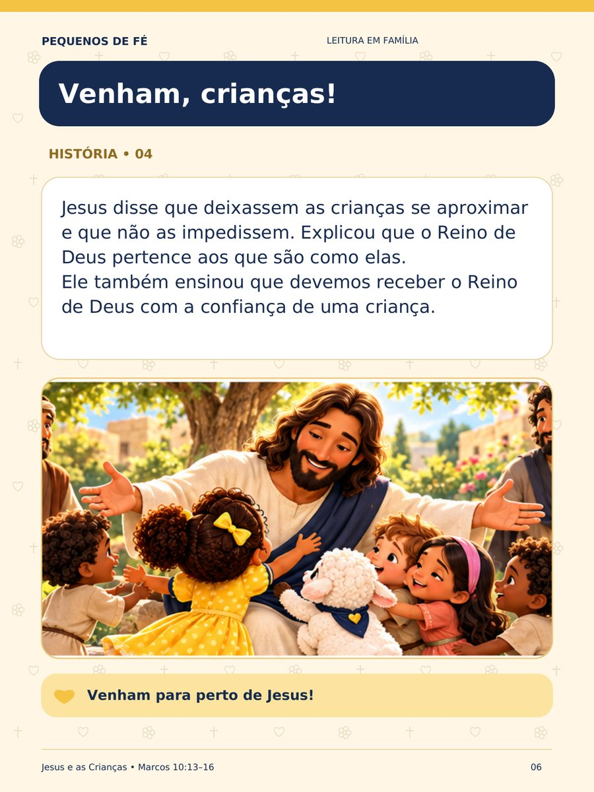
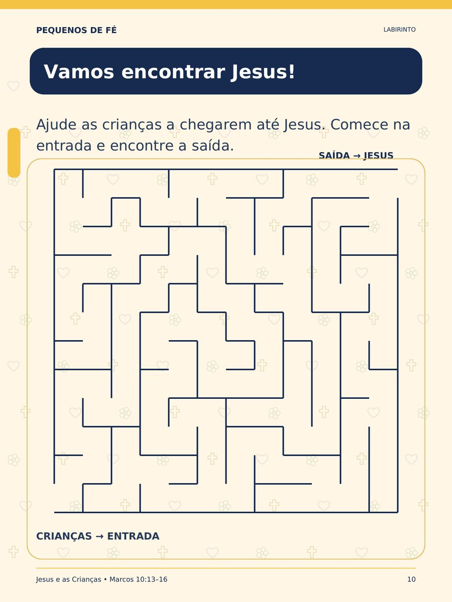
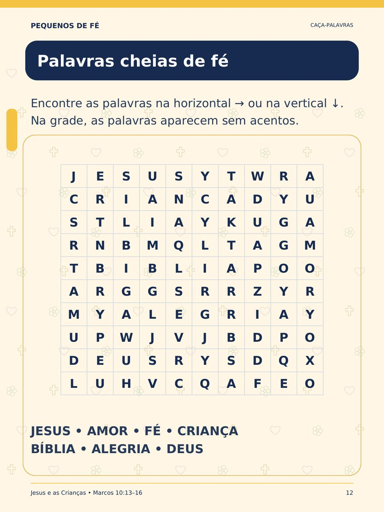
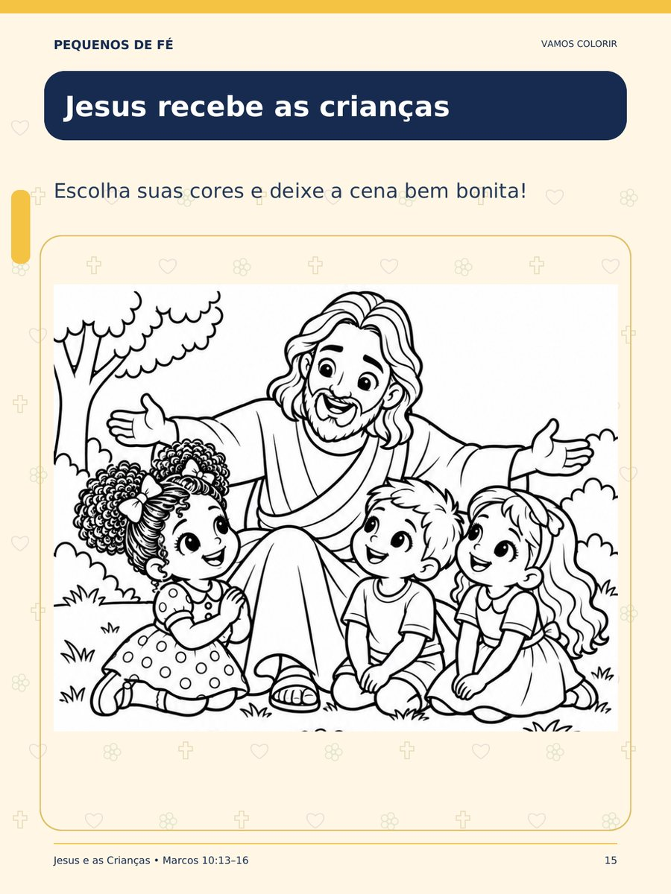
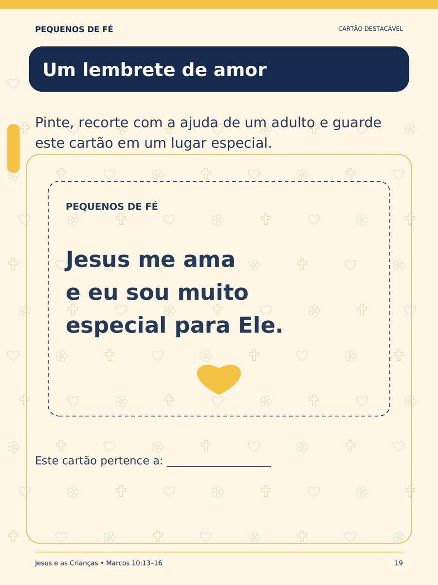

Jesus e as Crianças
Uma história de carinho e fé para lembrar aos pequenos que cada criança é importante para Jesus.
Disponível gratuitamente até 12 de outubro de 2026
Receber meu e-book gratuitoUm presente digital para ler, brincar e viver a fé em família.
Cada criança é importante para Jesus
“Deixem vir a mim as crianças.”Marcos 10:14 · trecho em linguagem adaptada, como no e-book
Ester e Fê conduzem a leitura
Em Jesus e as Crianças — História e Atividades, a menina Ester e o cordeirinho Fê convidam a família a conhecer o dia em que Jesus acolheu as crianças, colocou as mãos sobre elas e as abençoou.
Depois da história ilustrada, as crianças continuam aprendendo com atividades bíblicas, desenhos para colorir, um momento de oração e um cartão especial para guardar.
Ester e Fê são personagens do Pequenos de Fé que acompanham a leitura; eles não fazem parte do relato bíblico.
22 páginas para ler, brincar e aprender
- 📖História ilustrada inspirada em Marcos 10:13–16
- 💭Três perguntas simples de compreensão
- 🧭Labirinto: ajude as crianças a chegarem até Jesus
- 🔍Encontre as cinco diferenças
- 🔤Caça-palavras bíblico
- ✏️Complete o versículo
- ✨Ligue os pontos
- 🖍️Jesus recebendo as crianças para colorir
- 🐑Ester e Fê para colorir
- 🙏Meu momento com Deus: atividade de gratidão
- 💛Oração infantil
- ✂️Cartão destacável
- ✅Gabarito para os responsáveis
Veja algumas páginas
Páginas reais do PDF, reduzidas para visualização.





Para viver a fé em família e na comunidade
Feito para pais, mães, responsáveis, professores e famílias que buscam conteúdo cristão infantil.
Algumas atividades pedem leitura e escrita. As crianças menores podem participar com a ajuda de um adulto, que lê os textos e conduz cada etapa.
Conheça também nossas histórias no YouTube!
Ester e Fê — Um Pequeno Gesto de Amor
Ester e o cordeirinho Fê também vivem histórias curtinhas no nosso canal, com mensagens de amor, amizade e bondade para assistir em família.
Conhecer o canal Pequenos de Fé ↗- 1 · Cadastro
- 2 · Instagram
- 3 · Download
Receba seu presente gratuito! 🎁
Preencha os dados do responsável para receber o e-book Jesus e as Crianças.
Seu presente está quase pronto! 🎁
Enquanto preparamos seu material, aproveite para visitar nosso Instagram e seguir o Pequenos de Fé. Assim você acompanha novas histórias e atividades com Ester e Fê. 💛
Imagens de Ester e Fê, do Pequenos de Fé.
Aqui está seu presente! 💛
Esperamos que Jesus, Ester e Fê tragam momentos de fé, aprendizado e carinho para sua família.
 Baixar meu e-book
Baixar meu e-book
Se o download não começar, toque no botão acima.
Prefere visualizar antes? Abrir o PDF em nova aba e salve pelo menu do navegador.Conhecer outros materiais do Pequenos de Fé
Dúvidas sobre o presente
É realmente gratuito?
Sim. Durante a campanha do mês das crianças, o e-book é gratuito: não há pagamento, pedido de cartão, assinatura ou compra obrigatória.
É um livro físico?
Não. É um e-book digital em PDF, com 22 páginas, para ler no celular, tablet ou computador.
Posso imprimir?
Sim. Você pode imprimir as páginas para realizar as atividades, colorir os desenhos e recortar o cartão.
Como recebo?
1) Toque em “Receber meu e-book gratuito” e preencha o nome e o e-mail do responsável (WhatsApp é opcional), depois toque em “Prosseguir”. 2) Mostramos um convite para visitar o Instagram do Pequenos de Fé, que é opcional. 3) Toque em “Continuar e baixar o e-book”: o download do PDF começa aqui mesmo no site e também fica disponível no botão “Baixar meu e-book”. O arquivo não é enviado por e-mail.
Preciso de cadastro?
Sim, um cadastro simples com o nome e o e-mail do responsável. Não é preciso criar senha nem informar dados da criança. Receber conteúdos e ofertas é opcional: você só recebe pelos canais que marcar.
Preciso seguir o Instagram para baixar?
Não. O convite para seguir é opcional. Você pode continuar para o download mesmo sem abrir o Instagram.
Até quando posso receber?
Até 12/10/2026, às 23h59, no horário de Brasília.
Leve Jesus e as Crianças para sua família
PDF gratuito • 22 páginas • História e atividades
Disponível gratuitamente até 12 de outubro de 2026
Receber meu e-book gratuito